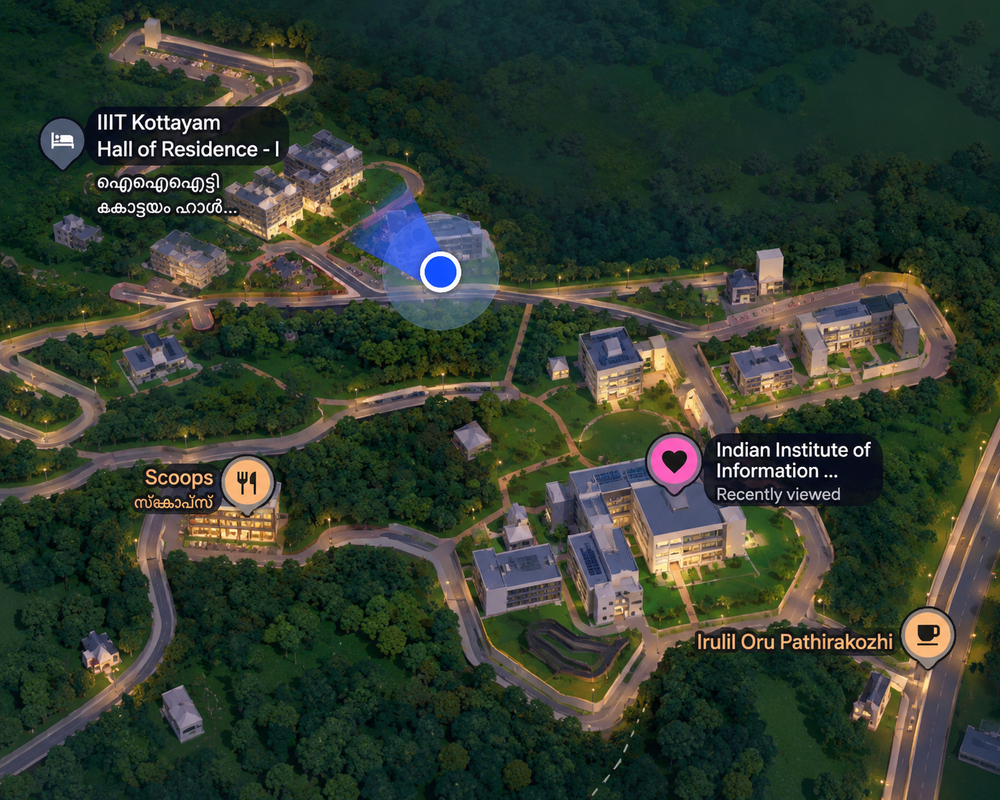
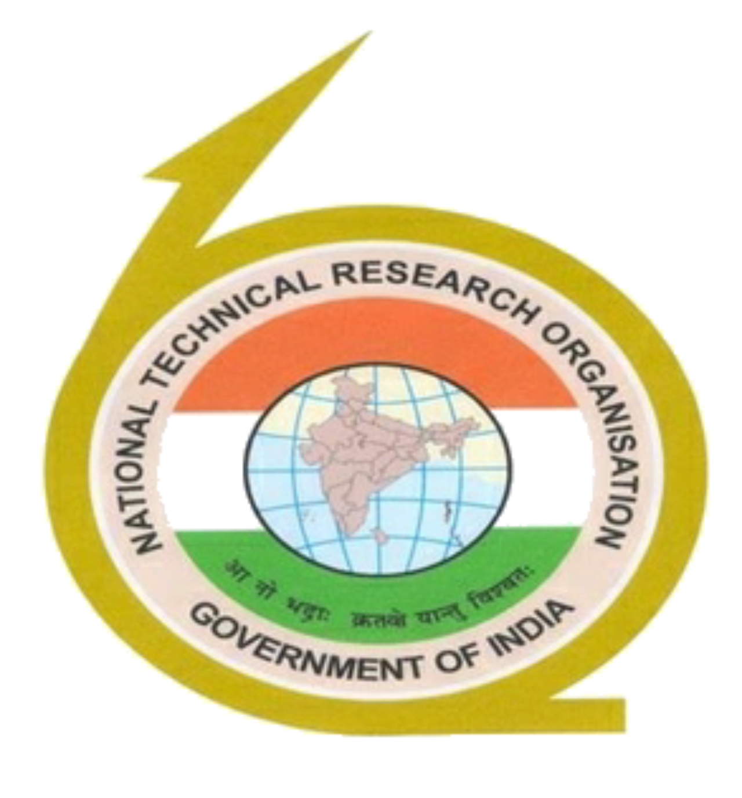

assisted in building an automated CCTV vulnerability assessment tool with network scanning and AI-assisted reporting.
Smart India Hackathon winning project.
a developer & quantum
explorer at IIIT Kottayam.
Pranathi studies Computer Science at IIIT Kottayam.

She worked as an intern in cybersecurity at NTRO, working on vulnerability assessment of CCTV cameras.

Still fascinated by how a world built on 0s and 1s has become so wonderfully complicated. And just when I thought I was beginning to understand them, quantum computing decided they could be both.
A Computer Science student curious about everything from Cybersecurity and AI to the logic behind the technology shaping our world. I love building things, breaking down problems and questioning how any of this works in the first place.
When I’m not staring at the screen, I’m probably dancing, painting, travelling, hosting an event, or yapping about something completely unrelated.
Forever curious, rarely quiet.
assisted in building an automated CCTV vulnerability assessment tool with network scanning and AI-assisted reporting.
Smart India Hackathon winning project.
led a study of quantum teleportation over noisy multi-hop networks, exploring repeater-assisted entanglement swapping.
Team Lead · Quandummies
worked on AI & Blockchain Credential Verification for tamper-proof vocational certificates.
Was the UI designer for Locii, a collaborative drawing app.
Open the live app · Sign-in required
made open-source contributions to Qiskit and college repositories, and serves as a lead at Openverse.
and more on GitHub!
Explore more projects and open-source work at @ptr25.
contributed to Fish Freshness Detection with Team NCD-3 through the Cedar Initiative.
99.62% team model accuracy, reported in the completion certificate.
organised Doodle and Decode and other interesting events as a Coders Club volunteer and core member.
Organised ICPC in 2025; participated in 2026 and solved three problems. Interested in competitive programming and mentored juniors in DSA.
hosted TEDx 2026 and Freshers Fest, conducted club sessions and orientations, and won MUN twice.
Head Girl at Carmel School and a state-level declamation and debate competitions winner.
painted, made art, and designed posters using Figma and Canva, plus the college magazine Kronicles 2025.
Interested in designing. A little creative energy goes into everything.
built responsive websites and brought interfaces to life as a web development intern at Crevix Studio.
Web development & interface design